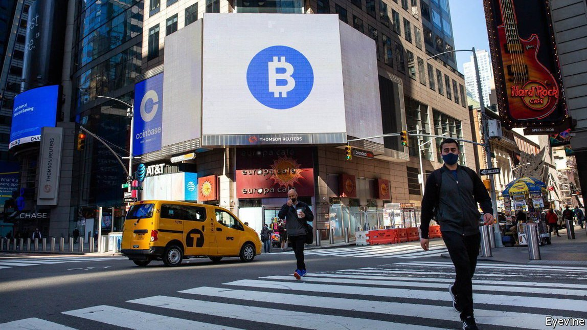
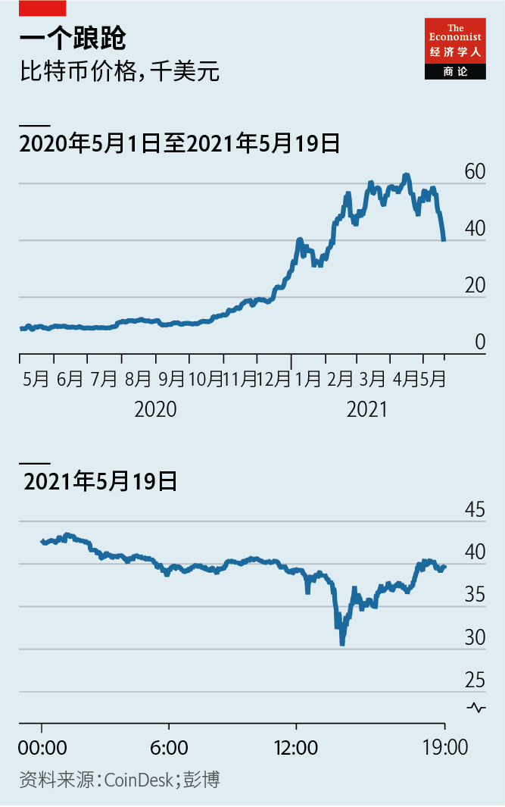
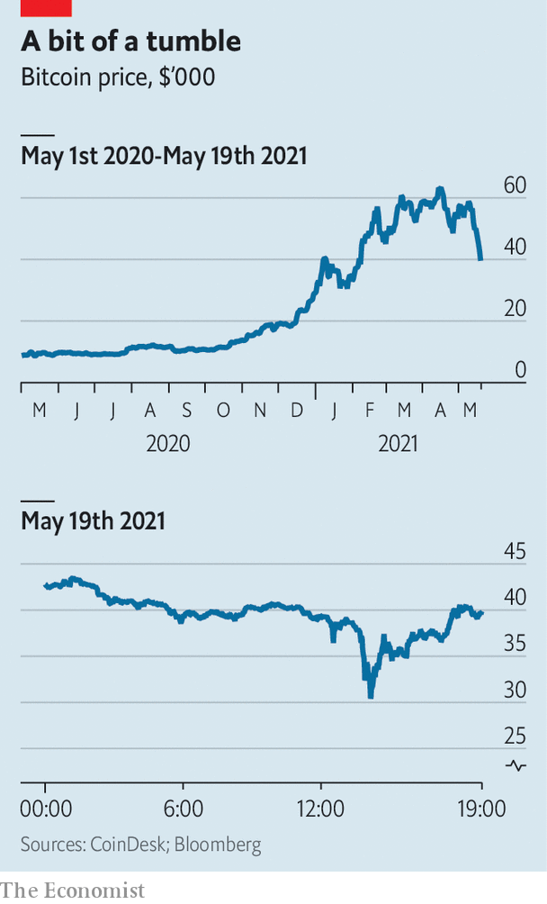

2021-05-31T14:34:26+00:00
步步为营
比特币暴跌之际，华尔街探入加密地域
欲知投资加密货币命运如何，且看银行后续动作
加密货币发烧友度过了被暴击的一周。5月13日，发行一种广泛用于促进比特币交易的“稳定币”的Tether公司表示，它持有的价值580亿美元的稳定币中只有2.9%有现金储备支持，这让人们怀疑它的稳定币能否盯住美元。电动汽车制造商特斯拉的老板马斯克在推特上表示，特斯拉将不再接受比特币付款。之后在5月18日，中国警告金融公司不要提供加密货币相关服务。比特币价格一度暴跌至3万美元，不到4月历史高位的一半，之后保持在约3.9万美元。
比特币崩盘，其他大多数加密货币也随之崩溃。包括Coinbase在内的几家大型加密货币交易平台都经历了长时间的交易中断。无法平仓的投资者感到被套住了；那些乐于“逢低买入”的人觉得自己受骗了。最近的波动可能会让人怀疑加密货币市场是否具有足够的流动性，甚至是否足够可靠，能让机构投资者集体入场。因此就值得来看一看华尔街的动向。
美国的大银行已经在探入加密货币领域。今年3月，摩根士丹利率先向富裕客户提供比特币基金。5月，高盛重启了在2017年搁置的加密货币交易团队；花旗集团表示可能会提供加密货币服务。纽约梅隆银行（BNY Mellon）和道富银行（State Street）正在竞相管理比特币的交易所交易基金（ETF），目前这类基金正在美国接受监管审查。摩根大通曾坚定地表示，除非加密货币开始受到监管，否则不会涉足这一块，但现在它已经暗示，如果市场扩大，它可能会开设交易业务。
为什么被高度监管的银行会踏入尚未受监管的加密货币狂野西部？美国的监管机构一直在明确规定银行能够提供的服务，这是一个有利因素。去年，美国货币监理署（Office of the Comptroller of the Currency）表示，银行可以为加密货币资产提供托管服务。美国商品期货交易委员会（Commodity Futures Trading Commission）将比特币和其他数字货币视为大宗商品，允许银行交易与之挂钩的衍生品。
不过，银行如此热情主要是因为有些客户对加密货币兴趣高涨。一年前，花旗集团的外汇业务主管伊塔伊·塔奇曼（Itay Tuchman）几乎从未接到过机构客户来电询问加密货币事宜。现在，他说他每周都会接到几通这样的电话。纽约梅隆银行的罗曼·瑞格尔曼（Roman Regelman）认为，这一热潮“是机遇，也是急务”。富有的客户正从私人银行撤资，散户取出活期账户里的存款，通过金融科技公司和创业公司押注数字货币。许多人宁愿在银行办理所有业务，反过来，银行也希望从客户服务费和数据中获利。
最方便提供的服务可能是衍生品交易，就像高盛正在做的，它让客户能有机会投资这种资产而又无需购买它们。然后是托管：代表大投资者保管资产并做相关簿记。这需要对技术投资，所以这一小批银行已经将托管分包任务出售给了专业公司。
但是，下一个级别的服务，也就是银行在自己的资产负债表上持有数字资产，无论是作为抵押品还是通过在现货市场上交易，目前还无法企及。5月19日比特币在几小时内贬值了近三分之一，在经过了这样的一天后，监管机构可能会确保银行业务不超越现状。芝加哥公司Cumberland的克里斯·齐尔克（Chris Zuehlke）说，即便银行不直接交易，它们还是可以帮客户与大型现货交易商对接，充当一站式店面，但依靠其他机构的基础设施和资产负债表。Cumberland在5月6日帮助高盛执行了首笔“大宗”加密货币期货交易。
银行坚称大多数客户预期会有过山车式的行情。但长久的溃败还是有可能吓跑潜在的客户，并引发监管机构的打压。在为新资产带来流动性和分销实力方面，华尔街无可匹敌。任何人要想知道加密货币投资的命运，不妨看看银行下一步会怎么做。
2021-05-31T14:34:26+00:00
Bit by bit
As bitcoin lurches, Wall Street plots its way into cryptoland
To work out the fate of crypto-investing, watch what the banks do next

CRYPTO BUFFS have had a punishing week. On May 13th Tether, which issues a “stablecoin” widely used to facilitate bitcoin trading, said that just 2.9% of its $58bn-worth of coins is backed by cash reserves, feeding doubts about its dollar peg. Elon Musk, Tesla’s boss, tweeted that the electric-car maker would not after all accept payments in bitcoin. Then on May 18th China warned financial firms against servicing cryptocurrencies. The price of bitcoin tumbled to $30,000, less than half its record high in April, before stabilising at around $39,000.
As it cratered, bitcoin dragged most other cryptocurrencies with it. Several big crypto exchanges, including Coinbase, experienced lengthy outages. Investors unable to liquidate positions felt trapped; those willing to “buy the dip” felt cheated. The latest swing might raise doubts about whether crypto markets are liquid or even reliable enough to welcome institutional investors en masse. That is why it is worth looking to Wall Street.
America’s big banks have been venturing into cryptoland. In March Morgan Stanley became the first to offer wealthy customers access to bitcoin funds. Last month Goldman Sachs revived the crypto desk it had mothballed in 2017; Citigroup said it may offer crypto services. BNY Mellon and State Street are vying to administer bitcoin exchange-traded funds, currently under regulatory review in America. JPMorgan Chase, once adamant that it would steer clear unless cryptocurrencies began to be regulated, has hinted that it might start trading operations if the market expands.
Why are highly regulated banks wandering into the unregulated wilderness of crypto? It helps that watchdogs in America have been setting out what services banks can provide. Last year the Office of the Comptroller of the Currency said they could offer custodial services for crypto assets. The Commodity Futures Trading Commission regards bitcoin and other digital currencies as commodities, enabling banks to trade derivatives linked to them.
The main reason for banks’ enthusiasm, though, is obsessive interest from some customers. A year ago Itay Tuchman, Citigroup’s foreign-exchange chief, hardly ever fielded calls on crypto from institutional clients. Now he receives them several times a week, he says. Roman Regelman of BNY Mellon deems the craze “an opportunity, but also an imperative”. Wealthy clients are pulling money out of private banks, and retail punters out of current accounts, to bet on digital currencies through fintech firms and startups. Many would rather do everything with their banks, which, in turn, hope to reap the rewards in customer fees and data.
Perhaps the easiest service to offer is derivatives trading, as Goldman now does, providing clients with exposure to the assets without having to buy them. Then comes custody: the storage, and related book-keeping, of assets on behalf of big investors. This requires investing in technology; the few banks already selling custody subcontract tasks to specialist firms.
But it is the next level of services, where banks hold digital assets on their balance-sheets, either as collateral or by trading in spot markets, that is currently beyond reach. After a day like May 19th, when bitcoin lost nearly a third of its value in a few hours, regulators may ensure it stays that way. Even if banks do not trade directly, says Chris Zuehlke of Cumberland, a Chicago-based firm that helped Goldman execute its first big “block” trade of crypto futures on May 6th, they could still connect clients to large spot traders, acting as the shopfront but relying on the infrastructure, and balance-sheets, of others.
Banks insist that most clients expect a rollercoaster ride. But a prolonged rout could still scare off prospective converts and trigger a regulatory crackdown. Wall Street has an unrivalled ability to bring liquidity and distribution muscle to new assets. Anyone wanting to work out the fate of crypto-investing might do well to see what the banks do next. ■
2021-05-31T14:34:26+00:00
步步為營
比特幣暴跌之際，華爾街探入加密地域
欲知投資加密貨幣命運如何，且看銀行後續動作
加密貨幣發燒友度過了被暴擊的一周。5月13日，發行一種廣泛用於促進比特幣交易的“穩定幣”的Tether公司表示，它持有的價值580億美元的穩定幣中只有2.9%有現金儲備支持，這讓人們懷疑它的穩定幣能否盯住美元。電動汽車製造商特斯拉的老闆馬斯克在推特上表示，特斯拉將不再接受比特幣付款。之後在5月18日，中國警告金融公司不要提供加密貨幣相關服務。比特幣價格一度暴跌至3萬美元，不到4月歷史高位的一半，之後保持在約3.9萬美元。
比特幣崩盤，其他大多數加密貨幣也隨之崩潰。包括Coinbase在內的幾家大型加密貨幣交易平台都經歷了長時間的交易中斷。無法平倉的投資者感到被套住了；那些樂於“逢低買入”的人覺得自己受騙了。最近的波動可能會讓人懷疑加密貨幣市場是否具有足夠的流動性，甚至是否足夠可靠，能讓機構投資者集體入場。因此就值得來看一看華爾街的動向。
美國的大銀行已經在探入加密貨幣領域。今年3月，摩根士丹利率先向富裕客戶提供比特幣基金。5月，高盛重啟了在2017年擱置的加密貨幣交易團隊；花旗集團表示可能會提供加密貨幣服務。紐約梅隆銀行（BNY Mellon）和道富銀行（State Street）正在競相管理比特幣的交易所交易基金（ETF），目前這類基金正在美國接受監管審查。摩根大通曾堅定地表示，除非加密貨幣開始受到監管，否則不會涉足這一塊，但現在它已經暗示，如果市場擴大，它可能會開設交易業務。
為什麼被高度監管的銀行會踏入尚未受監管的加密貨幣狂野西部？美國的監管機構一直在明確規定銀行能夠提供的服務，這是一個有利因素。去年，美國貨幣監理署（Office of the Comptroller of the Currency）表示，銀行可以為加密貨幣資產提供託管服務。美國商品期貨交易委員會（Commodity Futures Trading Commission）將比特幣和其他數字貨幣視為大宗商品，允許銀行交易與之掛鉤的衍生品。
不過，銀行如此熱情主要是因為有些客戶對加密貨幣興趣高漲。一年前，花旗集團的外匯業務主管伊塔伊·塔奇曼（Itay Tuchman）幾乎從未接到過機構客戶來電詢問加密貨幣事宜。現在，他說他每周都會接到幾通這樣的電話。紐約梅隆銀行的羅曼·瑞格爾曼（Roman Regelman）認為，這一熱潮“是機遇，也是急務”。富有的客戶正從私人銀行撤資，散戶取出活期賬戶里的存款，通過金融科技公司和創業公司押注數字貨幣。許多人寧願在銀行辦理所有業務，反過來，銀行也希望從客戶服務費和數據中獲利。
最方便提供的服務可能是衍生品交易，就像高盛正在做的，它讓客戶能有機會投資這種資產而又無需購買它們。然後是託管：代表大投資者保管資產並做相關簿記。這需要對技術投資，所以這一小批銀行已經將託管分包任務出售給了專業公司。
但是，下一個級別的服務，也就是銀行在自己的資產負債表上持有數字資產，無論是作為抵押品還是通過在現貨市場上交易，目前還無法企及。5月19日比特幣在幾小時內貶值了近三分之一，在經過了這樣的一天後，監管機構可能會確保銀行業務不超越現狀。芝加哥公司Cumberland的克里斯·齊爾克（Chris Zuehlke）說，即便銀行不直接交易，它們還是可以幫客戶與大型現貨交易商對接，充當一站式店面，但依靠其他機構的基礎設施和資產負債表。Cumberland在5月6日幫助高盛執行了首筆“大宗”加密貨幣期貨交易。
銀行堅稱大多數客戶預期會有過山車式的行情。但長久的潰敗還是有可能嚇跑潛在的客戶，並引發監管機構的打壓。在為新資產帶來流動性和分銷實力方面，華爾街無可匹敵。任何人要想知道加密貨幣投資的命運，不妨看看銀行下一步會怎麼做。